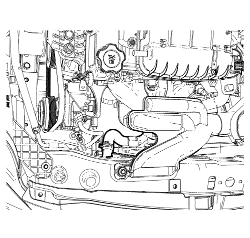
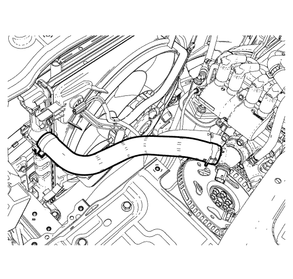
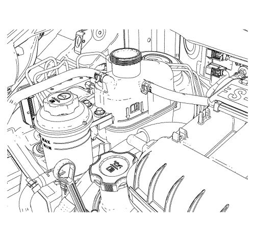

- Retire el tapón del vaso de expansión.
- Coloque un recipiente bajo el vehículo para recoger el refrigerante que se vaya a extraer.
- Desmonte el tubo flexible de salida del radiador.
- Recoja el líquido que salga en una bandeja de drenaje.
Advertencia : Eliminación correcta del refrigerante usado del motor. Almacene el refrigerante usado en un recipiente adecuado en espera de su eliminación o reciclaje. No vierta el refrigerante usado por el desagüe. El anticongelante de etilenoglicol es una sustancia química muy tóxica. Su eliminación en el alcantarillado público o en aguas subterráneas es irresponsable desde el punto de vista medioambiental e ilegal
Nota: Deseche el refrigerante recogido en el área designada a tal fin.
- Elimine todos los lodos y suciedad del interior del vaso de compensación.
- Monte el tubo flexible de salida del radiador.
- Llene el vaso lentamente de manera que el manguito superior del vaso quede por encima de la línea del agua. Esto permite la salida del aire que haya en el interior del sistema de refrigeración.

- Arranque el motor.
- Tenga en marcha el motor hasta que se abra el termostato. Se puede saber si el termostato está abierto tocando los manguitos del radiador para ver si están calientes.
- Pare el motor.
- Repita los pasos del 1 a 10 hasta que el agua salga limpia y libre de refrigerante y óxido.

- Llene el sistema de refrigeración, a través del vaso de compensación, con una mezcla de anticongelante de etilenglicol y agua. Para un funcionamiento en climas fríos, la mezcla debe tener al menos un 50 % de refrigerante, pero nunca más de un 60 %.
- Llene el vaso de compensación hasta la marca de MAX en el exterior del vaso.